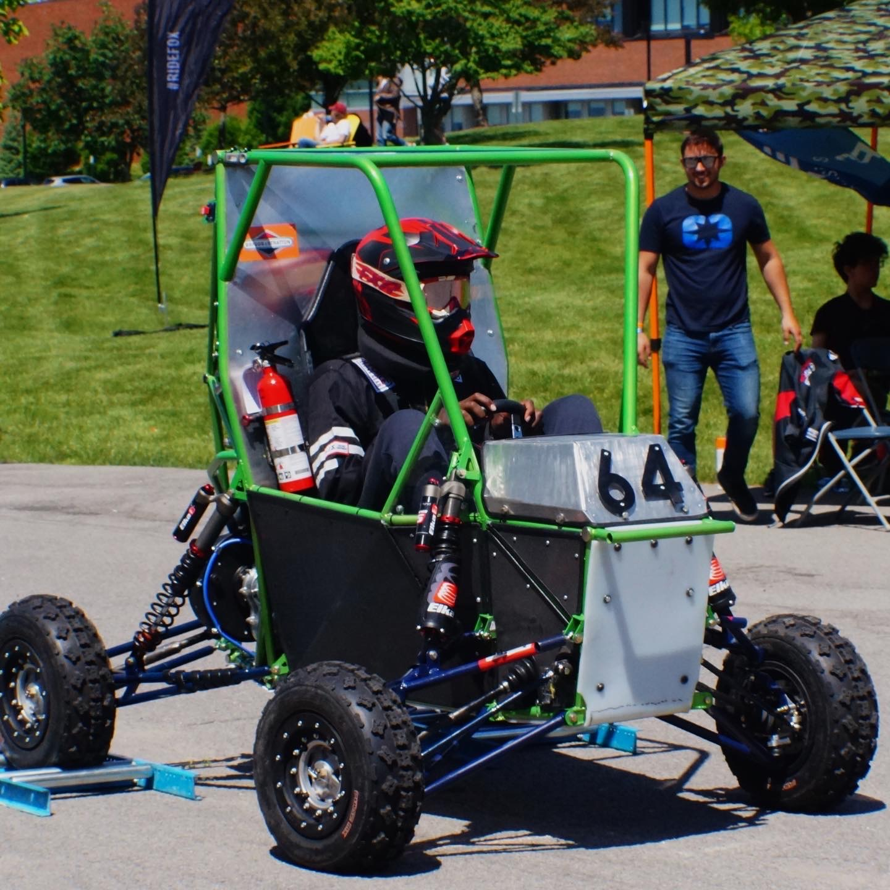

Oluwalonimi Ajayi.
Mechanical Engineering Portfolio
I'm Nimi
I'm a Mechanical Engineering undergraduate student at the University of Manitoba. I created this website/portfolio as a means to give live updates on what i believe to be the coolest projects i've worked on. The website also gives me the needed space to go into as much detail as i deem necessary. To give more info on myself and my interests, I'm a Nigerian currently studying as an International student in Canada and i've always had a fascination with robots, starting from the Lego Mindstorms set i had as a kid. After growing and coming to learn more about industry standards and practices, i've come to also find other areas such as advanced and digital manufacturing, controls sytems and physics based simulations very interesting. I'm currently focused on finding ways to improve my skills and ensure i'm able to compete in the current Job market. Feel free to reach out to me, whether you're a recruiter trying to see if i'll be a good fit for a job, or an enthusiast who's also interested in any of the work i've done so far.
My Projects
Paint LIne Fixture
- Design a new fixture for harrow sections which go through the paint line(blast, paint and oven) while reducing handling time
- Minimize paint defects caused by contact points on the section
- Ensure fixture allows for rotation of section as different operations have different requirements
- Apply proper tolerances as layers of paint will be constantly added to the fixture and it’ll undergo thermal expansion in the oven
- Eliminated bolts by using a gravity-based system and using FEA to keep the fixture light but stiff
- Fixed the axis of rotation to the center of gravity of the section and fixture to reduce effort required to rotate the 277lb section
- Implemented DFM and DFA principles to ensure all 16 fixtures can be made quickly and accurately
- Reused T-bar and other equipment already available on the paint line to reduce time spent taking specialized fixtures on and off
- Multi-part fixture with combined weight of 47lbs that goes on and off the paint line within eight minutes compared to a previous estimated time of 2 hours
- Reduction in the average number of paint reworks as power tools are no longer needed
- Final design is able to handle loads in both orientations with a minimum factor of safety of 3
Custom brake tooling
- 4000+ units for one part outsourced yearly
- Brackets couldn't fit in the brake with the available tooling
- Designed a tool to be installed on the TRIUMF TruBend 5130 to bend the metal brackets
- Used 3D printing and sheet metal stacking for initial testing to drive design changes
- Used parametric dimensions for the design so that changing 3 variables(original length,thickness & base width) was enough to make a new tool for a new part
- Final product was machined from 4130 tool steel to ensure durability without damging product
- Tool was able to bend the part to the required angle without damaging the part
- Multiple tools could be stacked alongside each other to bend multiple parts at once
- Final design could be adapted for 3 other parts that were formerly outsourced
Camera_Mover
- Unnecessary human labor required to reposition camera
- Accuracy fully depends on operator's attention
- Uses bolt pattern common to all cameras and tripods to make it compatible across various platforms
- Uses a rasberry Pi with openCV to detect humans and then wirelessly transmits a motor position to an esp32 which controls the servo
- Has additional remote mode in the case that an operator wants control over rotation
- Mounts with any camera/ tripod combination
- Makes video capture of a moving presenter automatic
- Can be controlled remotely
Solar Panel Cleaning Drone
- Needed to simulate loading conditions before taking drone out on an initial test
- Drone crashed on first test, so more testing was required
- Conducted FEA on the drone arms in SolidWorks to predict various failure modes
- Used root cause analysis after first crash to identify possible causes and come up with a solution
- Redesigned motor mount to eliminate cantilever style mounting method
- Identified possible displacement issues under max load and redesigned the drone arm to reduce the max displacement
- Reduced motor and arm vibration, leading to more stable flight